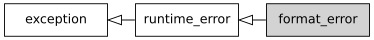

std::format_error
来自cppreference.com
| 在标头 <format> 定义
|
||
| |
(C++20 起) | |
定义抛出以报告格式化库中的错误的异常对象的类型。

继承图
成员函数
(构造函数) |
构造拥有给定消息的新 format_error 对象 (公开成员函数) |
operator= |
替换 format_error 对象 (公开成员函数) |
std::format_error::format_error
| |
(1) | |
| |
(2) | |
| |
(3) | |
1) 构造以
what_arg 作为解释字符串的异常对象。构造后 std::strcmp(what(), what_arg.c_str()) == 0。2) 构造以
what_arg 作为解释字符串的异常对象。构造后 std::strcmp(what(), what_arg) == 0。3) 复制构造函数。如果
*this 与 other 的动态类型都是 std::format_error，那么 std::strcmp(what(), other.what()) == 0。复制构造函数不能抛出异常。参数
| what_arg | - | 解释字符串 |
| other | - | 要复制的另一异常对象 |
异常
1,2) 可能抛出 std::bad_alloc。
注解
因为不容许 std::format_error 的复制抛出异常，通常将此消息在内部存储为分离分配的引用计数字符串。这也是构造函数不接收 std::string&& 参数的理由：无论如何它必须复制内容。
派生的标准异常类必须有一个公开可访问的复制构造函数。它可以隐式定义，只要分别在原对象和复制对象上通过 what() 获得的两个解释字符串相同即可。
std::format_error::operator=
| |
||
以 other 的内容对内容赋值。如果 *this 与 other 的动态类型都是 std::format_error，那么在赋值后 std::strcmp(what(), other.what()) == 0。复制赋值运算符不能抛出异常。
参数
| other | - | 要从其赋值的另一异常对象 |
返回值
*this
注解
派生的标准异常类必须有一个公开可访问的复制赋值运算符。它可以隐式定义，只要分别在原对象和复制对象上通过 what() 获得的两个解释字符串相同即可。
继承自 std::exception
成员函数
[虚] |
销毁该异常对象 ( std::exception 的虚公开成员函数) |
[虚] |
返回解释性字符串 ( std::exception 的虚公开成员函数) |
示例
运行此代码
#include <format>
#include <print>
#include <string_view>
#include <utility>
int main()
{
try
{
auto x13{37};
auto args{std::make_format_args(x13)};
std::ignore = std::vformat("{:()}", args); // 抛出异常
}
catch(const std::format_error& ex)
{
std::println("{}", ex.what());
}
}
可能的输出：
format error: failed to parse format-spec